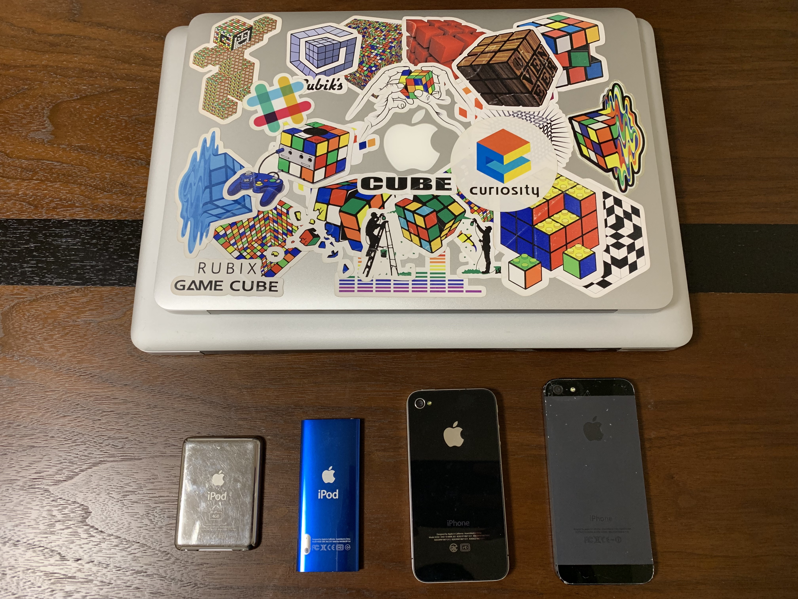
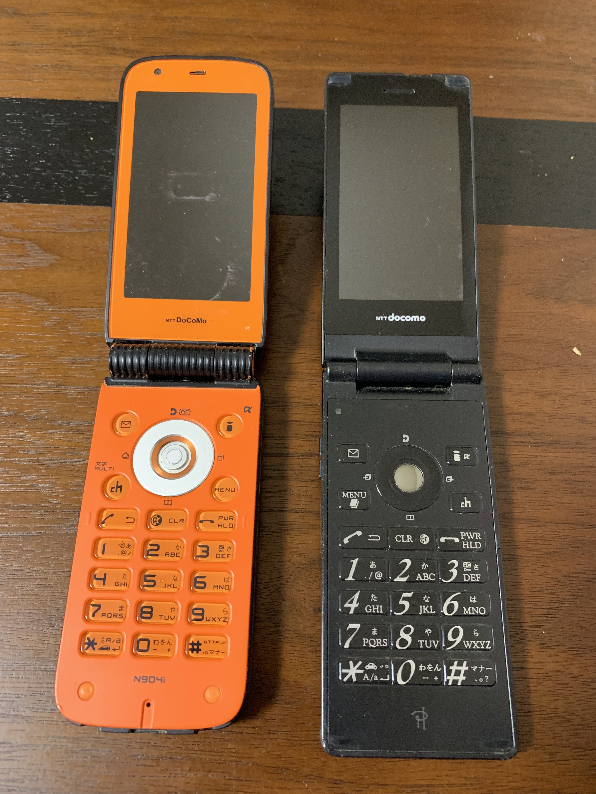

2019年断捨離したもの
数年間 1年使わなかったものは全て断捨離する というのを実践している。
大したライフハックではないが、意識しないとモノを溜めてしまう自分にとってはルール化するくらいが丁度いいと思っている。
しかし例外として家電類が捨てきれずにいた。もったいなく感じる、メインデバイスが壊れたときのサブとして使うかもしれない、などと捨てるのに心理的障壁が大きかった。ようやく今年は断捨離することができた。
雑に振り返ってみる。
What
🍎 Apple 製品

なかなか捨てられずにいたものの一つに Apple 製品が挙げられる。
正常動作するかどうか自信がなくトラブルになるのも面倒だったので、これらはじゃんぱらで売却した。かなりいい値段がつき、もう少し早く出しておけばよかったと思った。これらの他に iPhone 6 Plus は親に贈呈し、iPhone 7 Plus は風呂用デバイス兼目覚まし時計として使っている。
💻 Mac Book Pro 15inch
上京して初めて購入した Mac で思い入れがあった。Final Cut Pro で動画制作や Flash でゲーム作ったりしていた。この Mac がキッカケで出会った人もいて色々とエモい。
重量が重く持ち運びに難があり、自宅用 Laptop として使っていた。TV につないでストリーミングや音楽再生機として使っていた他、Ubuntu を入れて遊んだり、CD ドライブでデータ取り込みとかに使っていた。Apple TV を購入してからその役目はなくなり文鎮化していた。
💻 Mac Book Air
前職まで会社用 Mac というものがなく、自分の Mac で仕事していた。修理に出したり何かあったときのサブマシンとして Mac Book Air を使っていた。
実際4,5回はバックアップを復元して使っていた。
この Air は購入した直後、友人とカフェで作業しているとき麦茶を浴びてしまい、お亡くなりになりかけた思い出がある。Apple Store に持っていったら水没扱いとなっていた。
水分を拭き取ってもらうと一応正常に動作したので、修理には出さずに使い続けていた。
🎧 iPod (第 3 世代)
初めて購入した iPod。最近もランニング用として使っていた。
🎧 iPod Nano（第 4 世代）
動画が撮影できるようになった初めての iPod。動画は数十種類のエフェクトがつけられるようになっていて、色々遊んだ。
見返すと色々な動画が撮影されており、エモかった。
📱 iPhone 4
iPhone シリーズの中で初めて購入した。Softbank が学生向けに斡旋していてそれを経由して購入した。
元々 Docomo ユーザーだったのだが当時は Softbank でしか iPhone が発売されておらず致し方なかった。隣の学部は iPhone 3G が無料配布されていて、とても羨ましく思っていたのを思い出した。
購入依頼、Softbank 契約していたが、Sim Free にしたくて解約し、今は LINE Mobile を契約している。
📱 iPhone 5
裏面が割れている iPhone。渋谷の道玄坂を歩いているときに手を滑らせ約 2 メートルほど地面を滑走した。シリコンケースに入れていたのだが摩擦でケースから飛び出し意味はなかった。
この事件以来、iPhone ケースは Apple 純正を使うようにしている。
⌨️ Apple Magic Trackpad
電池式のやつで交換が手間だった。反応も悪くなったので新しいやつを購入した。
⌨️ Apple Magic Keyboard
電池式のやつ。同上。
🔌 その他付属品
- Apple EarPods with Lightning Connector
- Apple EarPods with 3.5 mm Headphone Plug
地味に溜まっていく付属品もじゃんぱらした。充電用の Lightning ケーブル以外はすべて使ってなかった。
📞 ガラケー

高校生のころから数えるとガラケーは3台使ったことがある。その内の２つはなんとなく捨てられないでいた。
いつの日か電源ケーブルがなくなってから電源すらいれず、触ってガラケーの感触を確かめるくらいにしかつかっていなかった。
メールの本文にテキストを入れると通信容量を食うので、件名だけでやりとりしていたことや、mixi 時代を思い出した。
⚡️ PC パーツ
- メモリ 8GB x 2
- Mac Book Pro 用交換バッテリー
Mac Book Pro を改造するのに使っていた余り分品。当分改造や自作 PC しないのでメルカリした。
💡Amazon Echo Dot (第2世代、2017年モデル)
使ってなかった。じゃんぱらした。
📺 テレビ（東芝 REGZA 32インチ 液晶テレビ）
学生のころに購入して10年ほど使っていた。特に不具合や不満もなかったが、最近は観たいテレビ番組もなくただのディスプレイと化していた。
強いていうなら目覚まし代わりに使っていたくらい。テレビのオンタイマーを音量 70 くらいでセットしておいて爆音で無理やり目を覚ますという使い方をしていた。
相方氏と同居しはじめてから爆音はやめた。
ヤマダ電機に持ち込んで、リサイクル券を発行して廃棄した。運搬はタクシーを使用した。
ジャパンタクシーの「JPN TAXI」の後部座席に難なく入れられた。
🧾 NHK
NHK 解約もテレビを捨てた理由の一つだった。
今のマンションに引っ越してから衛星アンテナがついているから衛星契約もさせられていた。約2年全く観ないのに垂れ流していたお金は実にもったいない。
NHK 解約は次の手順で完了した。
- NHK 解約窓口へ電話
- 理由と解約方法・解約日を聞かれる
- 解約書類が届く
- 解約書類にリサイクル券のコピーを同封（14日以内に返送する必要あり）
- 過払い分は日割り計算で戻される
「廃棄の証明」というのが重要で、リサイクル券をもらうのが一番手軽そうだった。
国から認可を受けた廃棄をしているところであれば、有料でリサイクル券を発行してくれる。
よくある無料廃棄業者とかはリサイクル券発行してくれないので注意。
📀 ハードディスク
デジカメ写真や過去の書類、Mac のバックアップディスクとして使っていた HDD が何個かあった。
すべて Google Photos や Dropbox にバックアップした。
HDD はヨドバシカメラが無料で廃棄してくれた。
👕 衣類・バッグ
服は他の人が着てくれそうなものはメルカリし、そうでないものは FUKU-FUKU プロジェクトに回した。
バッグ類はメルカリした。
🎮 Nintendo 3DS + ソフト
本体がなければソフトも使わないので一緒にメルカリした。
🧴 化粧品・ギフトグッツ
もらったけど一度も使っていない化粧品（相方氏の）やギフト類をメルカリした。
化粧品は出品してすぐ売れるので驚いた。
🔋 使用済み乾電池
ヨドバシカメラが無料で受け取ってくれた。
ヤマダ電機やソフマップ、じゃんぱらなどは受け取りしてくれなかった。
📲 LINEアカウント
企業アカウントとかで通知きたけど内容は見ずに、スワイプして削除する習慣はないだろうか。
友人からくるメッセージ以外はすべてその状態になっていて、毎日使うアプリなので地味に手間を感じていた。
- メッセージ詳細を開く
- アカウント設定（右上ハンバーガー）
- 「ブロック」
- 一覧で「削除」
これで通知来なくなる。
How
まとめると次の手段で断捨離を進めた。
- メルカリ
- じゃんぱら
- ヨドバシカメラ
- FUKU-FUKU プロジェクト
Summary
断捨離して困ったこと
特になし。
強いて言うなら洗濯サイクルが滞ってるときに、着る服がなくて困るくらい。
ここに記載しなかったものも含め、日々意識して捨てたりリサイクルしているが、気を抜くとそれでもモノは増えていく。
断捨離できないのは「モノを捨てられない」のではなく「思い出が捨てられない」のだとつくづく思い知らされる。
断捨離®
※「断捨離®」は、やましたひでこさんの登録商標らしい。
知らなかった。